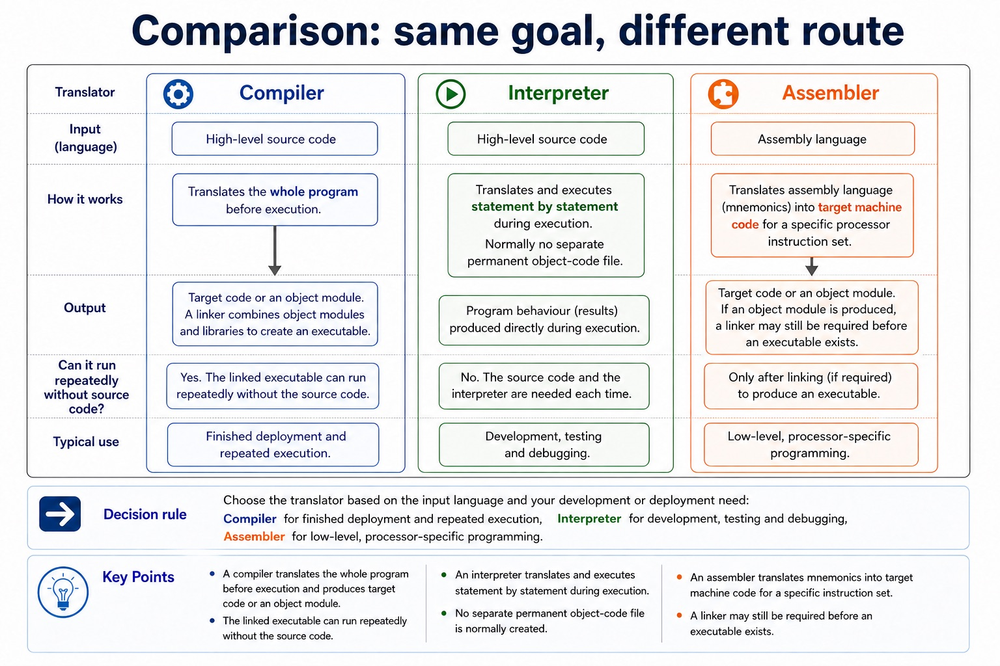

Disk formatter, antivirus, defragmentation, disk analysis/repair, compression and backup utilities
A disk contents analysis/repair utility examines file-system structures, reports faults and attempts defined repairs. Compression reduces file size and backup creates a separate recoverable copy. Encryption may be useful additional protection, but it does not replace any of the six named syllabus utilities.
Disk formatter, antivirus, defragmentation, disk analysis/repair, compression and backup utilities.
A disk formatter prepares a storage medium with file-system structures. A virus checker scans for, quarantines and removes malware. A disk defragmenter rearranges fragmented file blocks on a magnetic disk; it is not a speed treatment for SSDs.
A disk contents analysis/repair utility examines file-system structures and attempts defined repairs.
Structure and relationships
disk formatter
Disk formatter, antivirus, defragmentation, disk analysis/repair, compression and backup utilities.
disk analysis
Disk formatter, antivirus, defragmentation, disk analysis/repair, compression and backup utilities.
antivirus
Disk formatter, antivirus, defragmentation, disk analysis/repair, compression and backup utilities.
defragmentation
Disk formatter, antivirus, defragmentation, disk analysis/repair, compression and backup utilities.
repair
A disk contents analysis/repair utility examines file-system structures, reports faults and attempts defined repairs. Compression reduces file size and backup creates a separate recoverable copy. Encryption may be useful additional protection, but it does not replace any of the six named syllabus utilities.
compression
A disk contents analysis/repair utility examines file-system structures, reports faults and attempts defined repairs. Compression reduces file size and backup creates a separate recoverable copy. Encryption may be useful additional protection, but it does not replace any of the six named syllabus utilities.
Worked example · Disk formatter, antivirus, defragmentation, disk analysis/repair, compression and backup utilities: complete worked route
- Identify the relevant condition or input
A disk formatter prepares a storage medium with file-system structures.
- Trace how the process works
A virus checker scans for, quarantines and removes malware.
- Connect the mechanism to its result
A disk defragmenter rearranges fragmented file blocks on a magnetic disk;
- Complete example
Choose the utility from the fault: Use a formatter to prepare a new storage medium, disk analysis/repair for file-system errors, a backup to recover a deleted file, and compression to reduce transfer size.
Choose the required utility by its operation

- A disk formatter prepares a storage medium with file-system structures.
- A virus checker scans for, quarantines and removes malware.
- A disk defragmenter rearranges fragmented file blocks on a magnetic disk.
- A disk contents analysis/repair utility examines file-system structures and attempts defined repairs.
- Compression reduces file size; backup creates a separate recoverable copy.
教师讲法 / 易错点
用“术语 → 机制/步骤 → 场景后果”检查 S5.02。先让学生读素材关系，再用英文完整表达；若只能复述名词，就回到 worked example 逐步追踪。